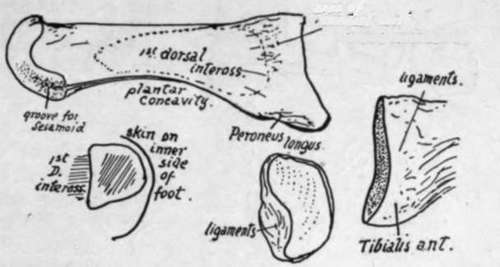
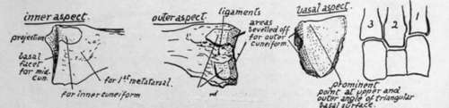
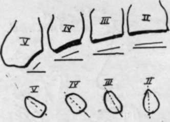
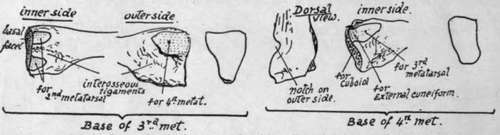

Metatarsus
Description
This section is from the book "The Anatomy Of The Human Skeleton", by J. Ernest Frazer. Also available from Amazon: The anatomy of the human skeleton.
Metatarsus
With the exception of the first, the metatarsal bones are long and slender, with heavy proximal bases and small end or base is enlarged, especially prominent below, presenting a kidney-shaped, slightly hollowed facet for the inner cuneiform, whose borders correspond with the general shape of the shaft in being convex internally and concave externally. On the inner side of the base, nearer the plantar aspect, is a secondary marking for Tibialis anticus, and on the other side a hollowed mark for Peroneus longus. A marking- not often a definite facet-is to be found on the outer side of the proximal enlargement showing the area of contact with the second metatarsal, and in its neighbourhood.
Fig. 152.-First metatarsal, left side. External view, and base from inner side and from behind. Also a scheme of section showing how the inner side of shaft is subcutaneous and hence convex.
Fig. 153.-Basal end of left second metatarsal are impressions for interosseous ligaments. The head has practically no articular surface on its dorsal aspect, only on its plantar side and extremity, that in the former situation being scored by two grooves in which the two sesamoid bones slide that are in the capsule.
These two bones are the largest sesamoids in the body after the patella, and keep the long flexor tendon away from the head of the bone : they, with the soft tissues covering them, are responsible for the plantar prominence of the " ball of the toe," and receive the insertion of the Abductor, Flexor brevis, and Adductors. The inner one is slightly the larger, and there is usually a corresponding difference in the size of the grooves on the head. Sesamoids are occasionally found in the other metatarso-phalangeal joints as in the hand.
The bone is superficial and can be felt on its dorsal and inner sides, but in the sole it is deeply placed and covered immediately by the short flexor of the hallux, and externally gives an extensive origin to the first Dorsal Interosseous. The communicating artery runs down in relation with the proximal part of its shaft on this side.
Second Metatarsal
The longest of the series. Base fits in between first and third cuneiforms, so carries facets for these on each side, interrupted by interosseous (tarso-metatarsal) ligaments, in addition to an interrupted articulation on the outer side for third metatarsal, and a non-articular area on inner side for first metatarsal. The area just below the facet for the first cuneifor m marks the anterior attachment of " Lisfranc's ligament." The bevelled-off cuneiform area on the outer side is one of the characteristics of the bone (Fig. 153). The wedge-shaped basal facet is very slightly concave, owing to a small projection of the upper and outer angle. Markings of interosseous ligaments are well developed. The shaft gives origin to no palmar interossei, but to the first two dorsal muscles.
Fig. 154.-Scheme to show the obliquity of the bases of the metatarsals. Left side. The increasing obliquity is seen compared with the coronal line. The lower figure illustrates the increasing sectional obliquity of the shafts from within outwards.
Fig. 155.-Basal ends of 3rd and 4th metatarsals, with outlines of their respective tarsal surfaces.
Third Metatarsal
This articulates with one of the cuneiforms, the external, which supports it, and for which it has a flat triangular basal facet : at the sides are facets for the second and fourth metatarsals respectively, that for the former interrupted and converted into double surfaces by an interosseous ligament, that for the latter single.
The obliquity of the line of its base is greater than that of the second (see Fig. 154), but not so great as in the fourth metatarsal.
Fourth Metatarsal.-Notice the very obhque plane of the base, the heaviness of this end of the bone, with the appearance of a notch and twist in it ; this, with the fact that its basal facet is not triangular but rather four-sided, is enough to distinguish the bone. There is a small marginal facet internally for the outer cuneiform, because this bone projects very slightly beyond the cuboid, and this facet is continuous with that for the third metatarsal. A single facet externally for the fifth metatarsal : just in front of this is the notch or pit that gives the crooked appearance to the proximal part of the bone, for the strong interosseous ligament which connects it with the last bone of the series.
Fifth Metatarsal.-The proximal end has a very oblique tarsal facet, a slightly concave metatarsal facet, and a prominent styloid process: to this are fastened the Peroneus brevis at the point and, on the dorsal side of its base, the Peroneus tertius. This latter muscle has usually a fairly extensive aponeurotic insertion spreading along the dorsal border of the bone, where there is a sharp ridge that marks its attachment and that of the dorsal fascia with which it is blended.
The Abductor metatarsi quinti, deep fibres of the abductor of the little toe, is attached, with much ligamentous tissue, to the outer and under part of the process, and the Flexor brevis has a part of its origin from the plantar surface further in.
The strong base and styloid process may support some weight when the outer arch is sufficiently flattened to bring them to the ground; this probably occurs when any pressure is made on the arch beyond that supported in balancing the body, and thus there is no extra strain thrown on the shaft or small head. The whole of the dorsal and outer surface of the bone can be palpated, but its lower aspect is covered by the marginal musculature.
The heads of the four metatarsals are comparable with those of the metacarpals (see pp. 105 ct seq.), and the same may be said about the structure of the metatarsophalangeal joints, save that the transverse metatarsal ligament extends to the capsule of the great toe and has an Adductor muscle arising from it.
The shafts, however, differ from those in the hand in that the markings for interosseous muscles, being arranged on a slightly different plan, do not render each shaft distinguishable.
Continue to: